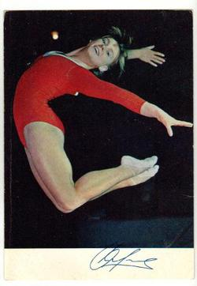

Olga Karasyova (USSR)
(née Kharlova)
1969 European AA Silver
Medalist and FX Champion
1970 World FX Silver Medalist

Medal Total
Olympic Games: 1
Gold
World Championships: 1 Gold, 2
Silver
European Championships: 1 Gold, 3
Silver, 1 Bronze
Olga was born on July 24, 1949. She was coached by Igor Zhuravlev and later Sofia Muratov at CSKA Moscow. She was married to - and divorced from - fellow gymnast Valery Karasyov, and graduated from the Faculty of Foreign Languages at the Moscow Regional Pedagogical Institute with a diploma in French (in which she was fluent). She died on October 26, 2025.
Competition Results
1965
Jr. USSR Championships: 1st AA
1966
FRA-USSR Dual Meet: 1st Team, 2nd AA
ROM-USSR Dual Meet: 1st Team, 1st AA
USSR Championships: 6th AA, 5th V, 5th B
USSR Cup: 7th AA
USSR World Trials: 5th AA
World Championships: 2nd Team, 15th AA
Yerevan Invitational: 4th AA
1967
Pre-Olympics: 10th AA
USSR Championships: 7th AA, 3rd FX
USSR Spartakiad: 1st Team, 3rd FX
1968
Olympic Games: 1st Team, 7th AA, 5th FX
USSR Championships: 4th AA, 4th V, 4th UB
USSR Cup: 5th AA
1969
European Championships: 2nd AA, 1st FX, 2nd UB, 2nd
B, 3rd FX
Moscow Championships: 1st AA, 1st B, 1st FX
USSR Championships: 4th AA, 1st FX, 4th UB
USSR Cup: 3rd AA
USSR-GDR-ROM: 2nd Team, 1st AA, 1st FX, 2nd V, 2nd B, 5th UB
1970
All-Union "Best Routines" Competition: 1st FX
USSR Championships: 7th AA, 1st FX, 4th B
USSR Cup: 5th AA
USSR-GDR: 1st Team, 1st AA
World Championships: 1st Team, 7th AA, 2nd FX
1971
USSR Championships: 2nd AA, 1st B, 1st FX, 2nd V
USSR Cup: 3rd AA
USSR Spartakiade: 2nd AA
1972
USSR Championships: 4th AA, 6th V
This page was created on September
28, 2002 and was last updated on March 24, 2026.
© Gymn Forum